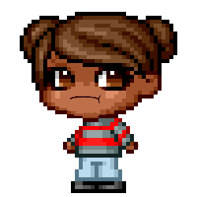

A Code Journal for
Hub Pages
View the Code Journal on GitHub
Repositories and latest Contribution Activity
A Code Journal for
Hub Pages
View the Code Journal on GitHub
Last updated on January 27th, 2020
I am a gamer, developer, woman, American, artist, founder, fundraiser, dreamer, student, friend, victim, sister, auntie, customer, viewer, member, creator, user, and owner.
I 'm not a perfect person with all the answers. I don't only think of myself because most of the time I'm focused on what I'm trying to do at that moment. I don't complain a lot cause it won't change anything and it makes me sad. I don't listen sometimes as much as I should when emotions are involved. I don't exercise or eat healthy enough. I don't judge others cause the mirror effect is always present. I try to see everyone as me but under different circumstances.
In 2013, I had a health crisis that forced me to change everything I had planned for the rest of my life. So now I am completely changing the way I work. This repository is one of the ways I am doing that.
I am what I am... I believe, dream, hope, try hard, love, learn, teach, pray, wish, think, meditate, and value life.
I know myself... and I'm eagerly open, enduring, aggressively applied, I try to embrace criticism, commit emotionally, have a heart, observe, push through judgements, use actions not words, check my ego, give constructive criticism, have a child like energy, destroy limits, kinda weird, always learning, and always determining why.
I try to NEVER be complacent, inflexible, conservative, helpless, impatient, grandiose, distracted, egotistical, or negative. I'm a work in progress and growing up as fast as I can.
I need a mentor...
I am enjoying my life and I love what I do. I watch live streams and social media all day, reading most of the day while writing in my journal. I have a clipboard, talk a lot and like to draw people out of their shells. I consider the people online my digital friends. The idea is to take part in the social observations to grow an essential understanding of the latest key trends and industry observations critical to success.
A vital unexpected result of the observations made is how common it is for successful communities to use the value of a knowledge management system to easily store, disseminate, and effective use lessons learned during the content cycle. This requires disciplined, descriptive, and mechanistic analysis of several technologies, tools, and quantifiable approaches.
I enjoy all media even radio and the process of development. Putting both of these things together to build something while trying new things to make games and adjacent apps is exciting. I have found that applying the principles of problem solving to make technology often spent gathering details, factors, and explanations is always critical to my success.
In addition, team work skills like communications, persuasion, and negotiation are involved to find solutions. In this Github recreation or my journal, I map out the methods, results, discussions to revisit, goals, explain what I have learned, definitions, key questions, theories, and my background. At the end of each page I summarize to give a clear overview of what I think is worth noting.
You can read more about me at:
-
https://www.linkedin.com/in/Keeyana-Jones
-
BLOG